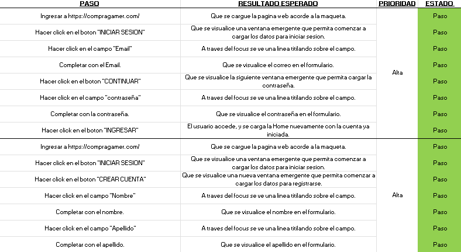
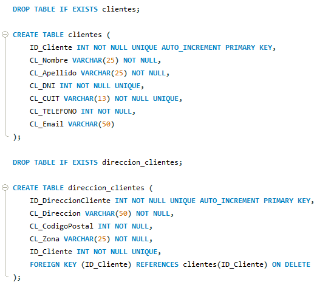

Tester QA Manual
Este proyecto se encuentra finalizado, fue realizado como proyecto final para el curso “Tester QA Manual” de CoderHouse, el cual complete exitosamente.
En este proyecto se realizaron principalmente tareas como testing de aplicaciones web, diseño y ejecución de casos de prueba, reporte de bugs, documentación y toma de evidencias.
GitHub

SQL
Este proyecto se encuentra finalizado, fue realizado como proyecto final para el curso “SQL” de CoderHouse, el cual complete exitosamente.
En este proyecto, mas pensado para el ámbito corporativo, se desarrollo un modelo de negocio completo, con objetivos, diagramas E-R, diagrama de tablas control, creación de tablas, store procedures, creación de vistas, triggers, entre otros.
GitHub

Desarrollo Web
Este proyecto aun se encuentra en desarrollo, por el cual se podrá ver como falta aún cosas para terminar, así como otras en estado incompleto. Cuando dicho proyecto esté terminado será especificado.
En este proyecto, se busco realizar una pagina web, que sirva como un “CV virtual”. Se utilizaron lenguajes como HTML, CSS, así como también se implemento Flexbox, Grids, Bootstrap, SASS y SEO.
GitHub